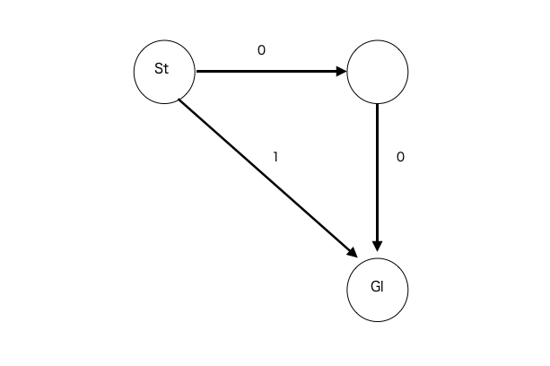

前のページ
BFSというものがあります。
これは、辺のコストが0もしくは1であるようなグラフの最短経路問題に使用できます。
まずは普通のBFS
通常のBFS(辺のコストが全て１)だと、頂点uまでの最短距離がxだとすると、頂点uから新たに頂点vの最短距離が求まったとしても、その長さはx+1になる。
新たに最短pathを作れるような頂点をQueueに入れておいて、その先頭から調べていくとする。
Queueには始め、始点のみが入っている(始点までの距離は０)。
手順１ : 先頭の頂点を取り出す。また、その頂点の最短距離をxとする。
手順２ : 距離がxの頂点から新たにできる最短距離はx+1なので、(あれば)それをQueueの末尾に追加する。
手順１と手順２をQueueが空になるまで繰り返す。
この操作中、Queueの中身は必ず { X , X , ... , X+1 , X+1 }となっている。
ダイクストラ法でも書きましたが、新しい最短pathを求めるときは、path候補の中で長さが小さい方から見れば良い。
このことからも、手順１の正当性がわかります。
01BFS
01BFSは普通のBFSにコスト0の辺が加わったversionです。
この場合、最短距離がxのpathから、距離がxのpathと距離がx+1のpathができます。
Queueの中身が { X , X , ... , X+1 , X+1 }だとすると、01BFSでは距離がXのpathは先頭に、X+1のpathは末尾に追加すれば、常にQueueがこの形を保てます。
通常のBFSの手順２が少し変わっただけですね。
注意点：AtCoderなどでは、到達不可能な場合は-1を出力することになっているので、dist配列の値を-1で初期化することが多いです。
その場合、通常のBFSでは最短距離の配列:distの更新は、Queueに頂点を追加するタイミングでも、Queueから頂点を取り出すタイミングでもどちらでもよかったのに対して,
01BFSでは必ず頂点をQueueから取り出すタイミングでdistを更新しないといけません。
なぜならdistが-1で初期化されている場合、頂点vへの新たなpathが最短かどうかは、dist[v]が-1かどうかで判定するからです。

例えば図のようなグラフの場合、始点をstとすると、辺(st->gl)を調べた際、dist[gl]は始め-1なので dist[gl] = 1と更新することになります。
その後、0辺を辿ってglにたどり着いたとしても、すでにdist[gl]は-1ではなくなっているので、最短経路として更新されることはありません。
これはほんの少し実装を変えれば回避できるのですが、つい忘れてしまったりすることもあると思うので、単純な01BFSはQueueから取り出すときにdistを更新するように自分の中で決めておくと事故が減るかもしれません。
以下はコード例です。verifyはこちらです。
- //include
- //------------------------------------------
- #include <vector>
- #include<iostream>
- #include<math.h>
- #include<map>
- #include<deque>
- using namespace std;
- #define debug(x) cerr << #x << " = " << (x) << " (L" << __LINE__ << ")" << " " << __FILE__ << endl;
- int h , w;
- bool isin(int i, int j){
- return (i>= 0 && i < h && j >= 0 && j < w);
- }
- int main(){
-
- cin >> h >> w;
- vector<string> S(h);
- for(int i = 0 ; i < h ; i++){
- cin >> S[i];
- }
- vector<vector<pair<int , int> > > G(h*w);
- int st = 0*w+0;
- int gl = (h-1)*w+w-1;
- vector<pair<int,int> > dire = {make_pair(0,1),make_pair(1,0),make_pair(-1,0),make_pair(0,-1)};
- for(int i = 0 ; i < h ; i++){
- for(int j = 0 ; j < w ; j++){
- //コスト０の辺
- for(pair<int ,int > nx :dire ){
- int I = i+nx.first;
- int J = j+nx.second;
- if(isin(I,J) && S[I][J] == '.'){
- G[i*w+j].push_back(make_pair(I*w+J , 0));
- }
-
- }
- //コスト1の辺,自分の位置から一度の破壊でたどり着ける範囲なら問答無用で張れる
- for(int p = -2; p <=2 ; p++){
- for(int q = -2 ; q<= 2 ; q++){
- if(abs(p*q) == 4)continue;
- int I = i + p;
- int J = j + q;
- if(isin(I,J)){
- G[i*w+j].push_back(make_pair(I*w+J , 1));
- }
- }
- }
- }
- }
- vector<int> dist(h*w , -1);
- deque<pair<int,int>> Que;
- Que.push_front(make_pair(st,0));
- while(Que.empty() == false){
- int now = Que.front().first;
- int d = Que.front().second;
- Que.pop_front();
- if(dist[now] != -1)continue;
- dist[now] = d;
-
- for(pair<int ,int> nx :G[now]){
- if(dist[nx.first] == -1){
-
- if(nx.second != 0 ){
- Que.push_back(make_pair(nx.first , d+nx.second));
- }else{
- Que.push_front(make_pair(nx.first , d+nx.second));
- }
- }
- }
- }
-
- cout << dist[gl] << endl;
-
-
- return 0;
- }
-
-
-